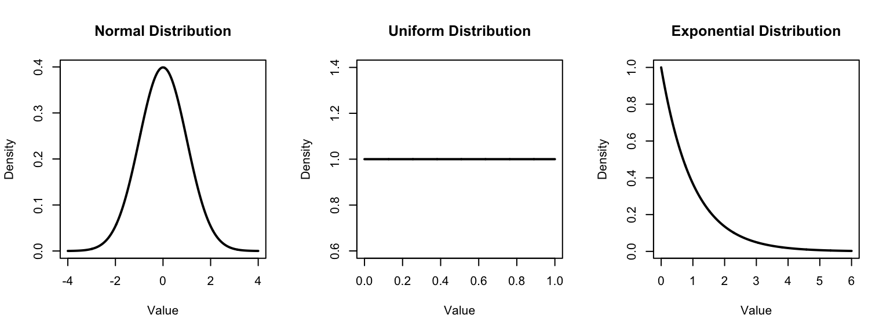

A random variable is a quantity whose value depends on the outcome of a random event.
Traditionally, we use capital letters \(X\), \(Y\), \(Z\) to denote random variables.
The values that random variables take are lowercase \(x\), \(y\), \(z\)
So, the probability that random variable \(X\) has the value \(x\) is denoted by \(P(X = x)\)
Random variables encountered in this class will be either discrete or continuous.
Review: Discrete random variables
Discrete random variables are those that can take on a countable number of potential values (could be countably infinite!), each associated with a probability of occurring.
Bernoulli random variable - A dichotomous (two-level) random variable \(X\) (e.g. dead or alive) with a probability of “success” denoted by \(p\).
Binomial random variable - A random variable \(Z\) denotes getting a certain number of \(k\) “successes” from a sequence of \(n\) independent Bernoulli trials, with probability \(p\) of “success”
Poisson random variable - A random variable \(X\) that takes on non-zero integer values, used for count data
Continuous distributions
Can we be more precise?
Letting \(X\) be the random variable that corresponds to how long a baby’s gestation was, we could imagine subdividing further and further:
Event
Probability
\(X\) < 20 wk.
\(P(X < 20)\)
\(X\) = 20 to 21 wk.
etc.
\(X\) = 21 to 22 wk.
etc.
\(X\) = 22 to 23 wk.
etc.
\(\vdots\)
\(\vdots\)
Event
Probability
\(X\) < 20 wk.
\(P(X < 20)\)
\(X\) = 20 to 20.1 wk.
etc.
\(X\) = 20.1 to 20.2 wk.
etc.
\(X\) = 20.2 to 20.3 wk.
etc.
\(\vdots\)
\(\vdots\)
Can we be more precise?
Now let gestational age \(X\) be a continuous random variable, which can take on any value, say from 0 to \(\infty\).
How might we define a continuous probability distribution that corresponds to \(X\)?
Continuous probability distributions
The probability that a continuous variable equals any specific value is 0
No use tabulating - there is an uncountably infinite number of possible values they can be, all with \(P(X = x) = 0\)
The distribution is given by a probability density function, helps us describe probabilities for ranges of values.
Density functions
Probability density functions may be given graphically, satisfying the following two rules:
The density must be non-negative everywhere \((f(x) \geq 0\) for all \(x\) from \(-\infty\) to \(\infty\))
The total area under the density must be 1
# Set up the plotting area to have 1 row and 3 columnspar(mfrow =c(1, 3))# Set up the x-axis values for the normal distributionx_normal <-seq(-4, 4, length =1000)y_normal <-dnorm(x_normal, mean =0, sd =1)# Plot the density of the standard normal distributionplot(x_normal, y_normal, type ="l", lwd =2, main ="Normal Distribution",xlab ="Value", ylab ="Density", col ="black")# Set up the x-axis values for the uniform distributionx_uniform <-seq(0, 1, length =1000)y_uniform <-dunif(x_uniform, min =0, max =1)# Plot the density of the uniform distributionplot(x_uniform, y_uniform, type ="l", lwd =2, main ="Uniform Distribution",xlab ="Value", ylab ="Density", col ="black")# Set up the x-axis values for the exponential distributionx_exponential <-seq(0, 6, length =1000)y_exponential <-dexp(x_exponential, rate =1)# Plot the density of the exponential distributionplot(x_exponential, y_exponential, type ="l", lwd =2, main ="Exponential Distribution",xlab ="Value", ylab ="Density", col ="black")

# Reset plotting layoutpar(mfrow =c(1, 1))
With density functions, we work with areas under the curve
# Set up the x-axis valuesx <-seq(-4, 4, length =1000)# Compute the density of the standard normal distributiony <-dnorm(x, mean =0, sd =1)# Plot the standard normal distributionplot(x, y, type ="l", lwd =2, main ="Standard Normal Distribution",xlab ="Value", ylab ="Density")# Shade the area above x = 2.5x_shade <-seq(0.5, 1.5, length =1000)y_shade <-dnorm(x_shade, mean =0, sd =1)polygon(c(0.5, x_shade, 1.5), c(0, y_shade, 0), col ="darkgoldenrod3", border =NA)
where \(\mu\) is the mean and \(\sigma^2\) is the variance.
We often write \(N(\mu, \sigma^2)\).
You do NOT need to know this formula for the exam.
68-95-99.7
Standardization
The normal distribution is a family of distributions of a specific form. There are an infinite amount of possible distributions, since \(\mu\) can be any real number and \(\sigma^2\) can be any positive number.
It would be very cumbersome to have to individually think about a \(N(0, 20)\) vs. \(N(2.5, 2)\) vs. \(N(694, 1549)\) vs. …. distribution, depending on the situation.
In practice, we could calculate a standard score or z-score that gives the number of standard deviations away from the mean an observation from a particular population is.
z-scores
A z-score tells us how many population standard deviations an observation is away from the population mean.
They provide ways to compare results across many different measurement scales, since z-scores are unitless
\[z=\frac{x-\mu}{\sigma}\]
(note the use of population parameters \(\mu\) and \(\sigma\))
So, a z-score of 1.2 is 1.2 standard deviations above a mean; a z-score of -0.8 is 0.8 standard deviations below the mean.
Osteoporosis
According to NHANES, the mean bone mineral density for a 65 year old white woman is 809 mg/cm\(^2\), with a standard deviation of 140 mg/cm\(^2\).
Suppose you are a 65 year old white woman whose bone density is 698 mg/cm\(^2\).
Should you be very concerned about osteoporosis?
Let’s calculate a z-score and find out!
Return to the tidyverse
In lab, we began to learn how to use dplyr for data manipulation. There are still a few more functions that will prove quite useful in our work in this class.
Particularly, these functions can be used to create new variables in a dataset based on existing variables.
mutate
Suppose we have a dataset named dat, that contains measurements of mass (kg), height (m), and body temperature in fahrenheit (fahrenheit) for study participants.
We want to make new variables for their BMI and body temperature in celsius. We can create these variables as follows (recalling the appropriate formulas):
── Attaching core tidyverse packages ──────────────────────── tidyverse 2.0.0 ──
✔ dplyr 1.2.1 ✔ readr 2.2.0
✔ forcats 1.0.1 ✔ stringr 1.6.0
✔ ggplot2 4.0.3 ✔ tibble 3.3.1
✔ lubridate 1.9.5 ✔ tidyr 1.3.2
✔ purrr 1.2.2
── Conflicts ────────────────────────────────────────── tidyverse_conflicts() ──
✖ dplyr::filter() masks stats::filter()
✖ dplyr::lag() masks stats::lag()
ℹ Use the conflicted package (<http://conflicted.r-lib.org/>) to force all conflicts to become errors
dat |>mutate(bmi = kg/m^2)dat |>mutate(celsius = (fahrenheit -32) *5/9)
Saving the dataframe
Most often when you define a new variable with mutate, you’ll want to use it later (for instance, in a visualization or in downstream analyses).
In this case, you’d want to save the resulting dataframe, often by overwriting the original one. As an example:
dat <- dat |>mutate(bmi = kg/m^2)
In this case, we’ve saved over the dat dataframe, which now contains the new variable bmi.
We could also save it as a new dataframe by using a different name.
case_when
We can also do more sophisticated data creation using case_when, which allows for a sequence of formulas defining new variables.
Let’s suppose we want to create a new variable that categorizes BMI based on CDC cut-offs.
Consider the following code, which utilizes the bmi variable we saved previously:
dat_bmi <- dat |>mutate(bmi_cat =case_when( bmi <18~"underweight", bmi >=18& bmi <25~"normal", bmi >=25& bmi <30~"oberweight", bmi >30~"obese" ))# Be sure all parentheses are closed!
We have used the case_when function to create a new variable. The individual cases are separated by commas, and within each case, the condition (e.g., BMI > 30) is on the left and the outcome for the new variable (e.g., “obese”) is on the right of a tilde (~).
NC Bike Crash Example
Let’s walk through a concrete example using the ncbikecrash data. Suppose we want to classify whether a crash occurred on a weekend or on a weekday. We will use case_when in combination with the logical operator %in% to do so (the c() function tells R that there is a list of things coming up):